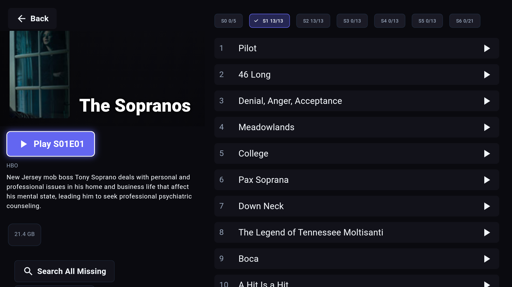
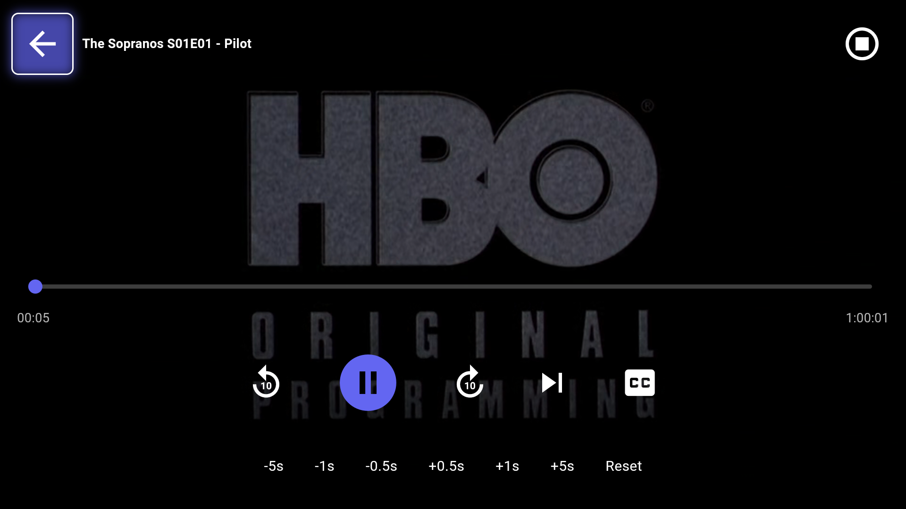
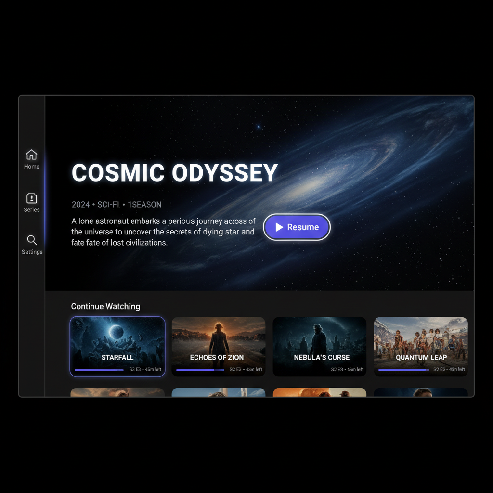
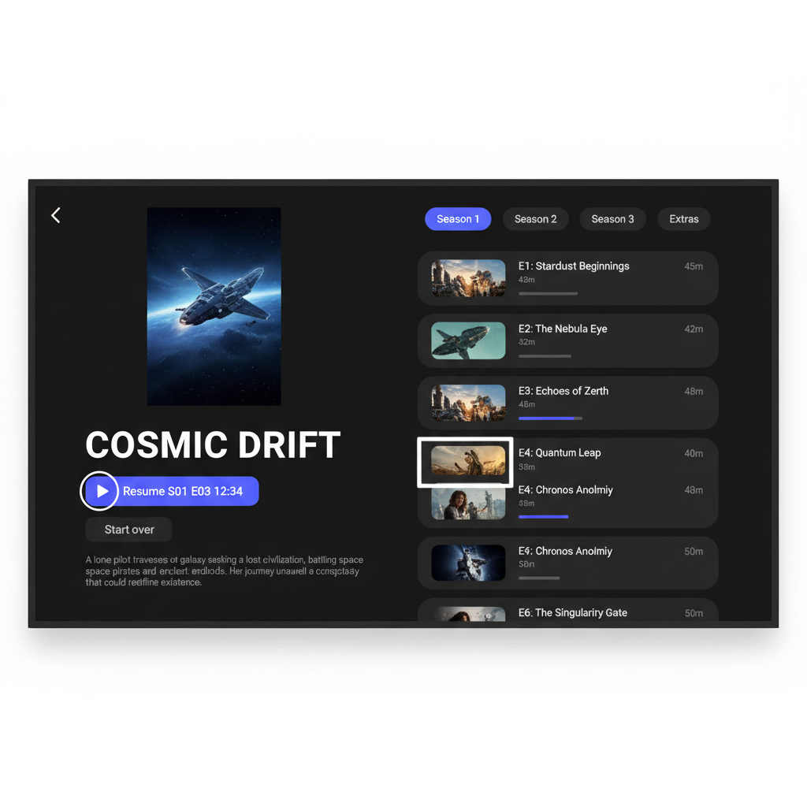
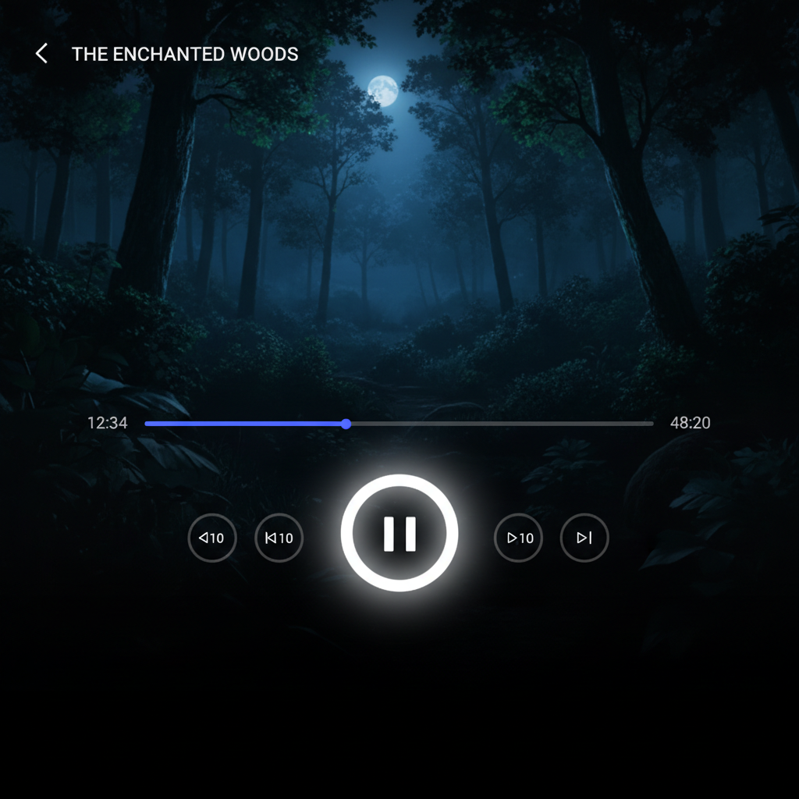

What changed in the living-room client, what is planned next, and generative mockups of the target screens. Every claim below is tied to a device measurement, a test, or a file in the repo.
The owner reported three things that made the client unusable: resume did not resume, episodes could not be started from the season list, and the detail screen hid the episode list below a full screen of decoration. All three were reproduced over network ADB before any code changed, then fixed and re-measured on the device.
| Change | Before | After | Status |
|---|---|---|---|
| Resume actually resumes | Seek issued before the file loaded, so playback restarted at 0:00 — and the bookmark was overwritten (10:00 → 0:32). | Start position travels through the player's load path, plus an enforced seek after the first duration report. Verified: overlay shows 10:00 / 22:45. |
DONE |
| Movies were all unwatchable | Every movie stream returned HTTP 500: the variant backfill wrote the movie folder as a playable file, and playback resolved a directory. | Backfill, daily scan and resolver all reject non-file paths. 120/120 sampled movies return 206. | DONE |
| Episode list is usable | Opened on S0 (specials) whose only entry is missing, so Select fired a silent search; Right jumped to an unexplained magnifier. |
Defaults to the first season with a file; per-row magnifier removed; Select on a missing row searches and says so. | DONE |
| Two-pane detail | One tall column: 340 px banner + synopsis + file card pushed the episodes ~1000 px down a 720 px screen. | Left pane = art, metadata, actions; right pane = pinned season chips + episode list, visible on entry with a focused Resume/Play CTA. | DONE |
| Playback errors are recoverable | Dead end: a raw URL in 13 px text, no action. | “Couldn't play this video” + focused Retry + Back, plus two automatic open retries before the error ever shows. | DONE |
| Kiosk mode | Box booted into a stock launcher. | Mediarr declares HOME; verified by reboot. Stock launcher kept for rollback; Settings → “Android home app” escape hatch. |
DONE |
| Brand | Default Flutter icon, square icon used as the TV banner. | Indigo “M” mark: 5 launcher densities, adaptive icon, 320×180 TV banner, web favicons + PWA manifest. | DONE |


The direction below comes from an independent 10-foot-UI review (Kimi K3.1 Pro) of real client screenshots against Netflix, Roku, Peacock, Hulu, Prime and HBO Max. These are generative concept renderings, not screenshots: they encode layout, hierarchy and focus treatment, not pixel-exact copy. Prompts are in the appendix.



| Prio | Item | Why / measurable target | Status |
|---|---|---|---|
| P0 | Move the multi-minute subtitle work off the request-critical path | subtitle-sync runs 332–681 s in the API process; node-cron logs missed executions at the same minutes the TV reported Failed to open. Target: no request blocked > 2 s. |
NEXT |
| P1 | Home budget: full Continue row + next-row peek, 260–280 px hero | Current card is tall enough that Recently Added is clipped; measure “row fully visible at 720 logical”. | NEXT |
| P1 | Transport: focus Play/Pause, 64 px targets, 5 s auto-hide while playing only | Today the overlay hides on a timer even when paused and initially focuses Back. | NEXT |
| P1 | Typography floor: ≥20 px body, ≥18 px metadata, ≥56 px targets | Several labels render at 14–16 px on a 1280×720 logical surface. | LATER |
| P1 | Episode thumbnails, remaining-time labels, Next Episode affordance | Mockup (right), and “32 min left” on Continue cards. | LATER |
| P2 | Demote library management under a Manage disclosure | Search All Missing / Delete Series currently sit in the playback path. | LATER |
| P2 | True 2:3 posters and 16:9 backdrops with focal-aware cropping | Landscape art is currently cropped into portrait tiles. | LATER |
The owner should not have to QA screen by screen. The client now reports every failure, and a scheduled triage pass picks them up every 30 minutes.
POST /api/client-errors → append-only JSONL, 5 MB rotationGET /api/client-errors?since=… for triageColours are already the app's own; the plan is to use them more consistently for focus and state.
Focus rule for every control: 3 px white outline, soft accent glow, child grows into reserved padding so neighbours never shift. Minimum target 56×56 logical px.
pm disable-user) for true lockdown, or kept as a safety net?